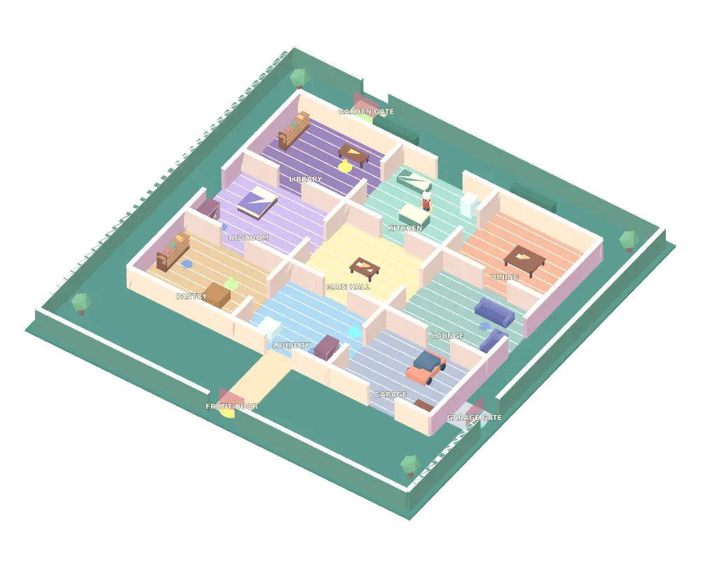

ESCAPE & CHASE · SOLO / 2–12 PLAYERS
THE BIG HOUSE.
Nine rooms. Three ways out. One hungry chef.
Choose a route to explore the floor plan.

Layout overview rendered from the game meshes.Brass key / Front exitPower / Garage exitTools / Garden exitHide spotChef patrol
Hold the action button near a task. One completed task opens its matching exit. Use blue hide spots to avoid the chef. A catch returns you to the yard; completed tasks stay done.
This is a route guide. The game opens separately in 3D.